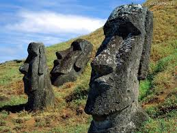

Chile |
|
Chile é um país da América do Sul, que ocupa uma longa e estreita faixacosteira encravada entre a cordilheira dos Andes e o oceano Pacífico. Faz fronteira ao norte com o Peru, a nordeste com a Bolívia, a leste com a Argentina e a Passagem de Drake, a ponta mais meridional do país. É um dos dois únicos países da América do Sul que não tem uma fronteira comum com o Brasil, além do Equador. O Pacífico forma toda a fronteira oeste do país, com um litoral que se estende por 6 435 quilômetros. O território chileno inclui alguns territórios ultramarinos, como o Arquipélago Juan Fernández, as Ilhas Desventuradas, a ilha Sala y Gómez e a ilha de Páscoa, as duas últimas localizadas na Polinésia. O Chile reclama a soberania de 1 250 000 quilômetros quadrados de território na Antártida.O Chile possui um território incomum, com 4 300 quilômetros de comprimento e, em média, 175 quilômetros de largura, o que dá ao país um clima muito variado, indo do deserto mais seco do mundo — oAtacama — no norte do país, a um clima mediterrâneo no centro, até um clima alpino propenso à neve ao sul, com geleiras, fiordes e lagos. O deserto do norte chileno contém uma grande riqueza mineral, principalmente de cobre. Uma área relativamente pequena no centro chileno domina o país em termos de população e de recursos agrícolas. Esta área também é o centro cultural, político e financeiro a partir do qual o Chile se expandiu no final do século XIX, quando integrou as regiões norte e sul em uma só nação. O sul do país é rico em florestas e pastagens e possui uma cadeia de montanhas, vulcõese lagos. A costa sul é um gigantesco labirinto de penínsulascompostas por fiordes, enseadas, canais e ilhas. A cordilheira dos Andes está localizada por toda a fronteira oriental chilena.
 |